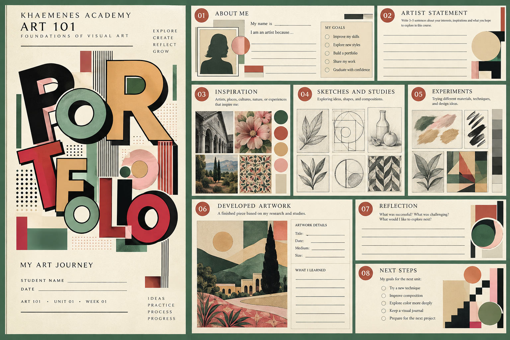

Investigate 15 min
Examine a folder, binder, or recycled container. Predict what could damage stored artwork. Compare a folded drawing with one stored flat. Record three requirements for a useful portfolio.
BAZAAR ART · KHAEMENES ACADEMY · ART 101
Unit 01 · The Artist's Beginning | One original assignment
Artistic growth begins with more than storing finished pictures. A portfolio is a record of decisions: what the artist observed, which materials they tested, what changed between drafts, and why a final work communicates its intention. The difference between an archive and a curated portfolio is selection with evidence. An archive keeps work; a curated portfolio explains why particular works matter.
Follow the five stages below. Open one stage at a time; all original lesson content, examples, and evaluation descriptors are preserved.
Worked artist statement: “Window Cup Study, graphite on paper. My first rim was too flat because I drew what I expected rather than what I saw. In the revised study, I observed the curve from my seated viewpoint and changed the ellipse.” This statement identifies an observable decision rather than simply saying the drawing looks better.
Compare a documented artist's sketchbook or preparatory study with a finished artwork. You might investigate Leonardo da Vinci's surviving drawings, Katsushika Hokusai's published drawing manuals, or a contemporary artist's documented process. These are research starting points, not claims that their methods were identical. Use a museum or collection catalog to verify the work's creator, date, medium, and context before drawing conclusions.
For each work, record: creator or cultural attribution; title or descriptive identification; date or period; material; holding collection; source URL or publication; and one observation supported by the work. Explain what cannot be determined from the available evidence. Do not copy the source image into a public gallery unless its reuse rights permit it.
Create a physical or digital portfolio entry showing (1) an initial five-minute observation, (2) a deliberate revision, and (3) a selected presentation drawing. Photograph or scan physical work if possible, but retain the originals. Add one paragraph explaining your choice of material, the visual problem, the evidence you used, and what you would attempt next.
| Dimension | Emerging | Developing | Proficient | Advanced |
|---|---|---|---|---|
| Observation | Few specific details | Some observed relationships | Specific, accurate comparisons | Nuanced comparisons across studies |
| Process | Only final work | Draft and final work | Draft, intentional revision and explanation | Multiple tested alternatives with reasoning |
| Evidence | Incomplete labels | Basic labels and reflection | Complete labels, sources and reflection | Careful attribution, limitations and future goals |
These descriptors guide formative review. Any official 80% mastery decision belongs to the authorized Academy assessment workflow.
How can an artist preserve, understand, and communicate their creative growth over time?
Learning goals: Explain the purpose of a portfolio; distinguish a process portfolio from a presentation portfolio; construct and personalize a durable art-storage system; establish a dated record of works; and describe safe storage, attribution, revision, and reflection practices.
An art portfolio is an organized collection of an artist's work and the information that explains it. It can be a decorated folder, a binder, a flat box, a digital collection, or a combination. A process portfolio keeps sketches, experiments, unfinished work, critiques, and revisions. A presentation portfolio is a carefully selected collection prepared for an audience, exhibition, application, or review.
Both are valuable. A first sketch may reveal an idea that a finished piece hides. A dated revision shows what the artist learned. A caption makes an artwork understandable years later.
A title, original cover design, and optional artist name or initials make the collection recognizable. Avoid putting private contact information on a public-facing cover.
Use tabs or dividers for sketches, studies, finished work, research, critique, and reflection. Add a simple contents page.
Record title, date, medium, size if useful, assignment, sources or influences, and one sentence about the artistic decision.
Keep work flat and dry; let wet media cure before storing; protect delicate surfaces with suitable interleaving; avoid adhesive directly on original artwork.
Keep early drafts alongside later versions. Note what changed, why, and what evidence guided the change.
Near the end of the course, choose works that demonstrate range, growth, and intention. Explain why each was selected.
Explore this original Academy portfolio spread: a typographic cover on the left and a thoughtfully organized collection of artist statements, inspiration, sketches, experiments, developed artwork, reflection, and next steps on the right. Notice the hierarchy of lettering, geometric collage, restrained color palette, and clear spaces reserved for the artist’s own work.

Create and decorate a usable physical art portfolio and establish its first academic evidence entry. Choose a sturdy folder, binder, envelope, or reused cardboard portfolio; a digital equivalent is also permitted when physical supplies are unavailable.
Low-cost option: Fold and reinforce recycled cardboard; tie with string or use a clean large envelope. Paper dividers are sufficient. Digital-only students can create a local folder structure and export this evidence sheet.
Safety: Ask an adult for assistance with sharp cutting tools when appropriate. Use non-toxic, age-appropriate materials and a ventilated workspace.
Follow these five stages to create one finished portfolio. The sixth card shows how to prepare for the next lesson.
Examine a folder, binder, or recycled container. Predict what could damage stored artwork. Compare a folded drawing with one stored flat. Record three requirements for a useful portfolio.
Draw two different cover thumbnails. Mark a title zone, artwork motif, and fastening or label position. Compare legibility, durability, and originality before choosing one.
Build or prepare the portfolio, test whether a sheet slides in without folding, and create dividers or a contents page. Revise any weak corners or closures.
Develop the chosen cover using your own marks, shapes, colors, symbols, or collage. Explain how at least two design choices communicate your artistic interests.
Date and label both design sketches, place them in the portfolio, and write a short reflection on the construction test and one planned improvement.
Keep your portfolio ready for contour and observational drawing. Prepare a pencil, paper, and an everyday object to study. Your first drawings will become dated portfolio entries.
Begin Unit 02 · Week 02Suggested times are flexible. Allow additional sessions for drying, material access, and individual needs. Students should complete one finished portfolio assignment, not five separate graded assignments.
For each situation, choose a response and examine the explanation. These are formative checks, not an Academy mastery assessment.
Create a sheet of three portrait-page artwork labels with subtle cut guides. Each label can identify a different artwork. Preview the full page before printing.
Artwork title: ______________________________
Date: ____________________ Medium: ____________________
Assignment / Week: _________________________
Observed or invented idea: ______________________________
Sources or artistic influences: __________________________
One choice I made and why: _____________________________
Revision or next experiment: ____________________________
Make a copy of this label for each weekly artwork. Add a photo or digital copy only if you choose; a physical portfolio is sufficient.
Design an original cover prototype. Move the title and symbols, choose a palette, and save your design as an SVG artwork. This is a digital sketch for the physical cover you will construct.
Artwork stays on this device; it is not uploaded to a server.
Add an entry each time you create or revise a work. Include sketches and experiments, not just finished pieces. Entries remain in this browser unless you export a backup.
You can merge imported records or replace the existing catalog. Existing entries are never replaced without confirmation.
Portfolio function and durability (20); original cover design and intention (20); clear organization and artwork labeling (20); documented design process (15); reflection and future use (15); safe materials and appropriate attribution (10). Proposed 80% threshold requires an authorized reviewer; this page does not issue a grade or unlock the next week.
Week 02: Contour and careful observation. Your first drawing studies will become the next dated entries in your portfolio. Keep this portfolio available throughout the 36-week course.
Each attempt presents five questions selected from a fifteen-question lesson bank. Four correct answers earn 80%. Questions and answer options are shuffled, and submitted answers lock until a new attempt. This browser-local result is practice evidence, not an Academy-authorized progression unlock.
Art 101 · Academic Progression
Week 02 awaiting authorization
The five-question quiz is formative only. Official assessment and studio evidence review must each meet 80%, and an authenticated Academy authority must confirm completion.
This is a fail-closed navigation control, not server-side protection of public lesson URLs. No grades or approvals are created by this page.